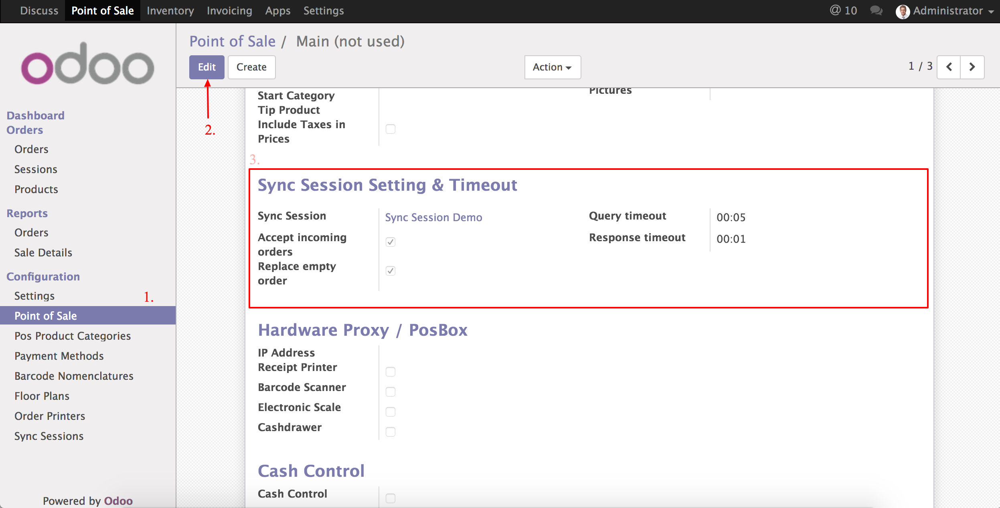
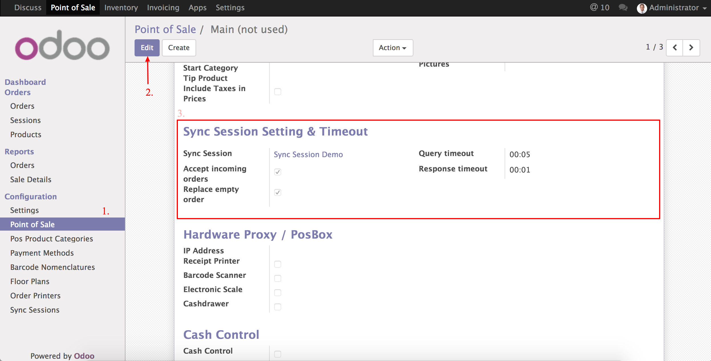
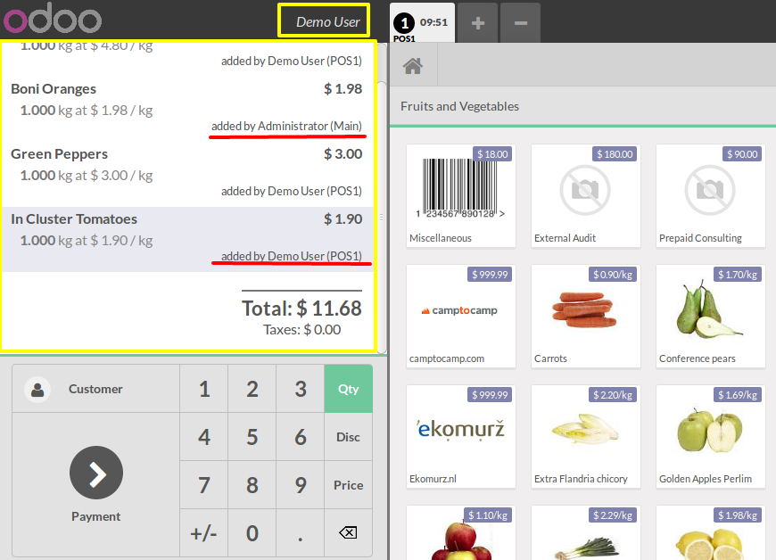

Sync POS Orders Features
POS Order Sync is a tool to synchronize order between multiple sessions(when more than one active sessions are available).
Available Features :
- We can easily sync orders to different sessions.
- There is automatically sync of POS orders.
- You can set Accept incoming orders in this session or not.
1. Configuration
A). Open "Point of Sale → Configuration → Point of Sales" and create or open some Point of Sale record.
B). Set Multi-session value (create new one if need) and click the Save button to save your changes. Set the same Multi-session for other "Point of Sale", which should be synced.  C). Multi-session Configuration..png)
B). Set Multi-session value (create new one if need) and click the Save button to save your changes. Set the same Multi-session for other "Point of Sale", which should be synced.  C). Multi-session Configuration.
2. Sync Orders view on POS screen
- login as Admin User on computer1 ⇒ start session on main
- login as Demo User on computer2 ⇒ start session on POS1
3. Sync session will be displayed as follows
